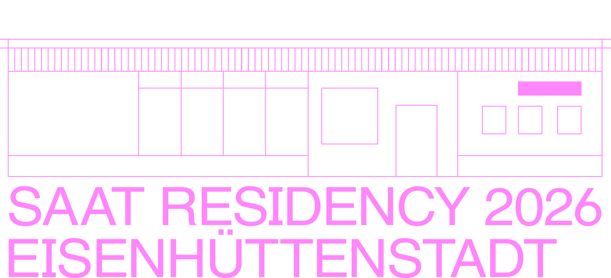

Die SAAT Residency ist ein Artist-in-Residence-Programm im Club am Anger in Eisenhüttenstadt. Der Club war über Jahrzehnte ein zentraler Ort des Zusammenkommens – Schulspeisung, Gaststätte, Tanzlokal – und wird im Rahmen der Residency erneut als kultureller Arbeits- und Begegnungsort aktiviert.
2026 werden interdisziplinäre Tandems eingeladen, für sechs Wochen in Eisenhüttenstadt zu leben, zu arbeiten und zu produzieren. Wohnen und Arbeiten greifen dabei bewusst ineinander: Die Residenzteilnehmenden leben gemeinsam in einer Wohnung vor Ort und nutzen den Club am Anger als Atelier, Arbeits- und Präsentationsraum.
Die Residency findet zwischen Mai und Oktober 2026 statt und wird von öffentlichen Veranstaltungen begleitet, die gemeinsam mit und für die Nachbarschaft entwickelt werden. Ein fester Bestandteil der SAAT Residency sind öffentliche, partizipative Formate. Workshops, Ausstellungen, Gespräche oder Performances öffnen den Arbeitsprozess nach außen und laden dazu ein, den Ort neu zu entdecken. Während der Residency ist der Club am Anger werktags zugänglich und kann als offener Raum für Austausch, Fragen und Begegnungen genutzt werden.
Die SAAT Residency versteht Eisenhüttenstadt bewusst als Alternative zum großstädtischen Kultur- und Mietdruck. Ziel ist ein Modell mit wechselnden Impulsen, das den Club am Anger als offenen Ort für Austausch und Teilhabe etabliert und erfahrbar macht, wie kulturelle, soziale und räumliche Zukunft auf dem Land entstehen kann.
4. Mai – 14. Juni 2026
Die Arbeitsräume im denkmalgeschützten Club am Anger, Platz der Jugend 1 sind für Besucher*innen werktags von 10-18h zugänglich. Es werden verschiedene Beteiligungsformate für die Anwohner*innen geplant, um den sozialen und kulturellen Austausch zu beleben.
Öffnungszeiten Mo-Fr 10-18 Uhr
Veranstaltungen 13. Juni 2026 25. Juli 2026 05. September 2026 17. Oktober 2026
Gemeinsame Abschlussveranstaltung 17. Oktober 2026
Club am Anger / Platz der Jugend 1 / 15890 Eisenhüttenstadt
Instagram: @saat.residency
Mails an
hallo@saat-residency.de
Folgt in Kürze...
Ein Projekt im Rahmen von
„Von hier aus Zukunft – Kulturland Brandenburg 2026/2027“
Kulturland Brandenburg 2026/2027 wird gefördert mit Mitteln des Landes Brandenburg.
Mit freundlicher Unterstützung der brandenburgischen Sparkassen.
In Kooperation mit:
Eisenhüttenstädter Wohnungsbaugenossenschaft EWG
Museum Utopie und Alltag
Kultur- und Sportamt Landkreis Oder-Spree